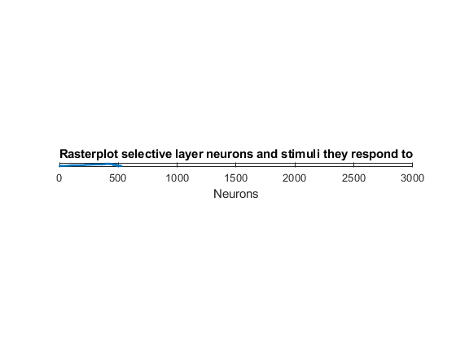
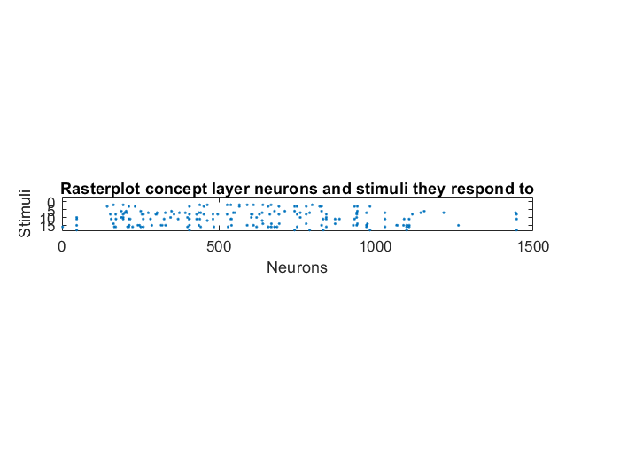

Script for testing association: image moments
We use the function 'moments' to compute the invariant moments of the images and use this values as stimuli for the model. When the concept layer weights U are manually set, the results are excellent. However, when they are adquired through the learning rule no desired pattern emerges.
Contents
Prepare enviroment
clear close all rng(3) path(path,'Images') path(path,'MatFunc/Vision') path(path,'MatFunc/Simulate') path(path,'MatFunc/Accuracy') path(path,'MINST') signa = 400; n = signa + 9; % neuron dimension = radius signature steps + 9 moments A = 1500; % number of neurons in concept layer M = 3000; % number of neurons in selective layer L = 20; mom = zeros(n,L); s = zeros(n,L); Figures = ["One", "Two", "Three", "Four", "Five"]; k = 1; for i = 1:5 for j = 1:4 Img = imread(strcat(Figures(i),int2str(j),'.jpeg')); % Compute the moments [mom(1,k),mom(2,k),mom(3:9,k),mom(10:n,k)] = moments(Img,signa,0); % Scale up the moments % mom(10:n,k) = aux; mom(1,k) = mom(1,k) * 100; % mom(2,k) = mom(2,k) / 100; % mom(3:9,k)= mom(3:9,k) / 100; mom(10:n,k) = mom(10:n,k) * 100; s(:,k) = abs(mom(:,k)) / norm(mom(:,k)); k = k+1; end end psl = 0.9; % selective probability Th = 1; % selective threshold pcn = 0.9; % concept probability Thcn = 0.1; % concept threshold alpha = 20; Tmax = 400; % max integration time f = @(t) mod(round(t),L)+1; % function defining the stimulus sequence K = 4; % associated stimuli. Must be a divisor of readDigits % function defining the consectutive signals sequence g = @(t) mod(round(t),L)+1-mod(round(t),K):mod(round(t),L)+1; delta = sqrt(1 - (2*norminv(psl) / sqrt(5*n))); b2 = (Th/delta)^2; % beta^2 bcn2 = (Thcn*sqrt(L)*delta*K*gamma(K + 0.5) / ... (Th*(1-pcn)*(1-delta)*factorial(K-1)*sqrt(M)))^2; % ??? W0 = 2*rand(n,M) - 1; % random neurons [~,id] = sort(sum(s'*W0 > Th)); % sort neurons for convenience W0 = W0(:,id);
Do simulations with Option D. Selective layer
h = 0.005; % time step (better to decrease) d = 150; % inhibitory coupling loc = M/20; % locality of inhibition % Sensory layer with locality W = SimulateNeurons4Loc(Tmax, h, W0, s, f, alpha, b2, Th, d, loc);
Plot selective layer
figure; V = W'*s; F = V > Th; R = orderRasterPlot(F'); spy(R); title("Rasterplot selective layer neurons and stimuli they respond to"); xlabel("Neurons"); ylabel("Stimuli");
Do simulations. Concept layer
y = max(0,W'*s - Th); % compute reaction to s % y = y.*(y > epsilon); % avoid round to zero problems % Hebbian learning U0 = 2*rand(M,A) - 1; % random neurons [~,id] = sort(sum(y'*U0 > Thcn)); % sort neurons for convenience U0 = U0(:,id); d = 0; %no inhibition % Concept layer U = SimulateNeurons(Tmax, h, U0, y, g, alpha, bcn2, Thcn, d); % Manually set the values % U = zeros(M,A); % Thcn = zeros(A,1); % for i=0:A-1 % aux = sum(y(:,i*K+1:i*K+K),2); % U(:,i+1) = aux/norm(aux); % v = U(:,i+1)'*y(:,i*K+1:i*K+K); % Thcn(i+1) = min(v(v~=0)); % end

Plot concept layer
V = U'*y; F = V >= Thcn; figure spy(F'); title("Rasterplot concept layer neurons and stimuli they respond to"); xlabel("Neurons"); ylabel("Stimuli");
Test examples
mom2 = zeros(n,5); s2 = zeros(n,5); Figures2 = ["One5", "Two5", "Three5", "Four5", "Five5"]; for i=1:5 Img = imread(strcat(Figures2(i),'.jpeg')); [mom2(1,i),mom2(2,i),mom2(3:9,i)] = moments(Img,signa,0); mom2(10:n,i) = mom(10:n,(4*i)); s2(:,i) = abs(mom2(:,i)) / norm(mom2(:,i)); end V2 = W'*s2; y2 = max(0,V2 - Th); Vcn2 = U'*y2; F3 = Vcn2 >= Thcn; disp("Reaction of concept layer to test examples (first 10 neurons):") disp(F3(1:10,:))
Reaction of concept layer to test examples (first 10 neurons): 0 0 0 0 0 0 0 0 0 0 0 0 0 0 0 0 0 0 0 0 0 0 0 0 0 0 0 0 0 0 0 0 0 0 0 0 0 0 0 0 0 0 0 0 0 0 0 0 0 0